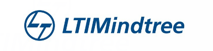

Background
Work Experience
Production analytics across audit, compliance, and BI at scale.
Amazon
Jun – Aug 2025
Business Intelligence Engineer Intern, Internal Audit
- Built scalable data solutions and KPI frameworks enabling data-driven audit planning across 3 business verticals on AWS Redshift.
- Processed 4M+ audit log records to surface timeline delays, fieldwork extensions, and resource allocation gaps across audit teams.
- Developed 2 self-service QuickSight dashboards tracking audit complexity and workload distribution for 25+ cross-functional stakeholders.
- Automated Python-based data pipelines with anomaly detection and data quality checks, saving 12+ hours per week across sprint cycles.
- Partnered with L6-L8 leaders across 3 audit teams to translate business priorities into data models, metrics, and KPI definitions.

LTIMindtree
Jun 2022 – Aug 2024
Software Engineer, BI and Compliance Analytics (Client: Citibank)
- Redesigned ETL/ELT pipelines on Snowflake to process structured and unstructured data, reducing analyst manual effort by 40% across 20+ compliance teams.
- Built 5+ self-service Power BI dashboards with DAX enabling 20+ risk and compliance stakeholders to make faster data-driven decisions.
- Designed dimensional data models and star schemas for policy datasets, cutting turnaround from 3 hours to 30 minutes with 25% faster reporting.
- Optimized SQL queries across large-scale policy datasets, reducing query runtime by 30% for compliance risk and audit teams.
- Implemented data quality management including automated validation, anomaly detection, and business definitions across datasets.

The Entrepreneurship Network
Apr – May 2021
Technical Program Management Intern
- Built 2 Tableau dashboards tracking engagement metrics across virtual incubation programs, surfacing trends invisible to program managers.
- Delivered analytics reports improving program efficiency by 15% and increasing startup completion rate by 20%.